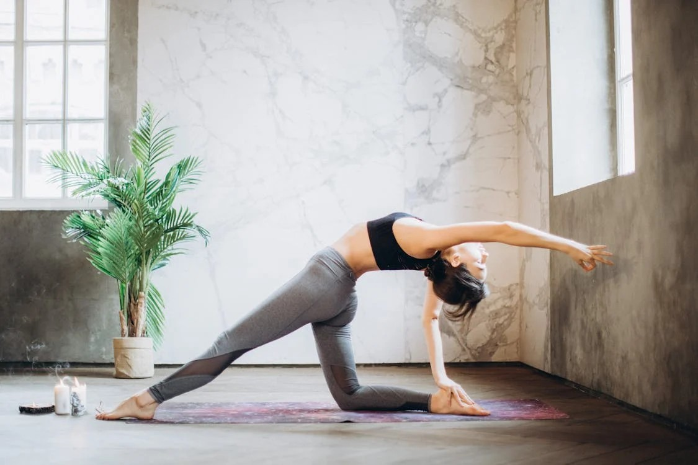
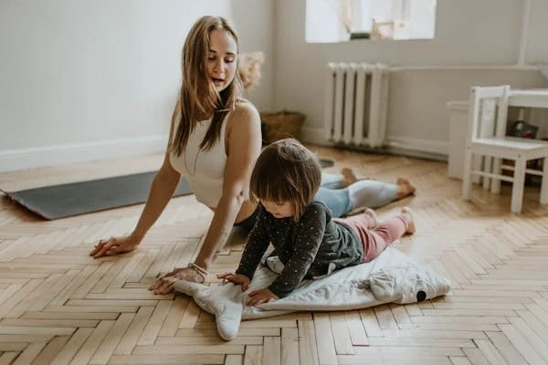
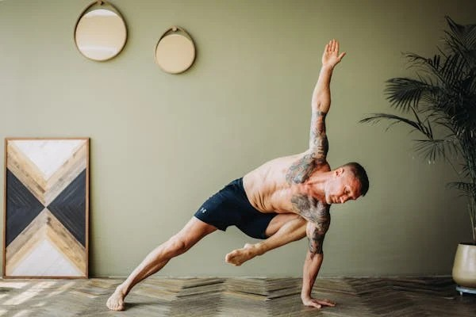

Yoga ve Meditasyon: Dengeli Bir Yaşamın Anahtarı
Bedensel esneklik, zihinsel dinginlik ve ruhsal huzur için bir rehber.
Günümüzün hızlı temposunda kendimize zaman ayırmak, sadece bir lüks değil, aynı zamanda bir ihtiyaçtır. Yoga, binlerce yıllık geçmişiyle sadece bir egzersiz biçimi değil, aynı zamanda bir yaşam felsefesidir. Matın üzerine çıktığınızda, dış dünyayı geride bırakır ve kendi iç dünyanıza doğru bir yolculuğa çıkarsınız.
Yoga Ne İşe Yarar?
Birçok insan yogayı sadece esneklik kazanmak için yapılan hareketler bütünü olarak görse de, faydaları bunun çok ötesindedir. Düzenli yoga pratiği, kasları güçlendirirken aynı zamanda zihni sakinleştirir. Araştırmalar, yoganın stres hormonu olan kortizol seviyelerini düşürdüğünü ve anksiyete ile başa çıkmada etkili olduğunu göstermektedir.
Yoga ayrıca duruş bozukluklarını (postür) düzeltir. Masa başında geçen uzun saatlerin omurgamızda yarattığı baskıyı hafifletmek için yoga en doğal ilaçtır. Nefes farkındalığı sayesinde, akciğer kapasitenizi artırır ve vücudunuza giren oksijen miktarını optimize edersiniz.
Yoga Yaparken Nelere Dikkat Etmeliyiz?
Yoga her yaşa ve her bedene uygun olsa da, sakatlanmaları önlemek ve maksimum fayda sağlamak için bazı kurallara dikkat etmek gerekir. İşte matın üzerindeyken aklınızda bulundurmanız gerekenler:
- Kendi Sınırlarınızı Bilin: Yoga bir yarış değildir. Yanınızdaki kişiden daha az esnek olmanız başarısız olduğunuz anlamına gelmez. Bedeninizi dinleyin ve acı hissettiğiniz noktada durun.
- Nefesi Unutmayın: Pozların içinde kalırken nefesinizi tutmak, sıkça yapılan bir hatadır. Hareketlerle nefesi senkronize etmek, yoganın en önemli kuralıdır.
- Isınmadan Başlamayın: Tıpkı diğer sporlarda olduğu gibi, zorlu pozlara (asanalar) geçmeden önce vücudu ısıtmak gerekir.
- Tok Karna Yapmayın: Ağır bir yemekten hemen sonra yoga yapmak rahatsızlık verebilir. Yemekten en az 2 saat sonra pratik yapmanız önerilir.
Sonuç olarak, yoga ve meditasyon, kendinizle yeniden bağlantı kurmanın en güzel yoludur. Günde sadece 15 dakika ayırarak bile hayat kalitenizde büyük bir fark yaratabilirsiniz. Unutmayın, en zor yoga pozu, her gün o matın üzerine çıkabilme disiplinidir.